高级数据结构与算法分析
Grading Policy
平时（<=60）
Homework 10%
Discussions 10%
Research Project 30% (Project1: 14% + Presentation 6% ; Project2: 10%)
Midterm 10%
Bonus
Final 40%
Chapter 1 ---AVL Trees, Splay Trees, and Amortized Analysis
height: 该节点向下的最长路径长度
depth：根节点到该节点的距离
AVL Tree
Definition
1.左右子树高度差不超过1
2.所有子树都是AVL Tree
The Minimum number of nodes
Single Rotation
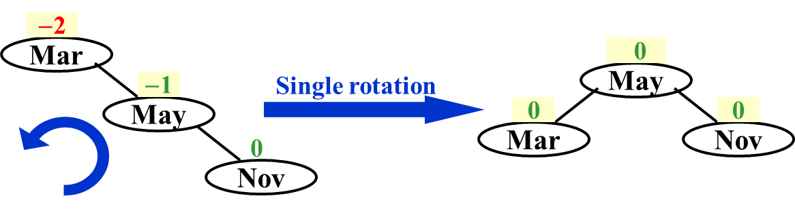
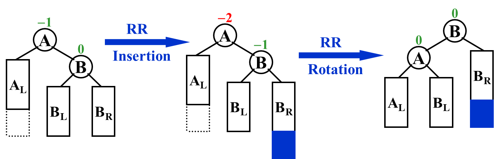
Double Rotation
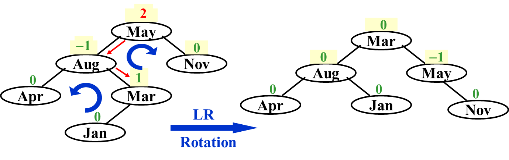
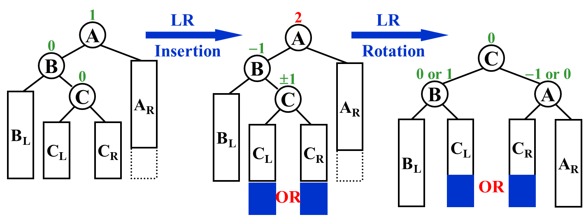
Splay Tree | 伸展树
Definition
从空树开始连续M次操作时间不会超过O(M log N)
核心思想：一个节点被访问后，通过一系列rotation操作将这个节点转移至根节点
Operation
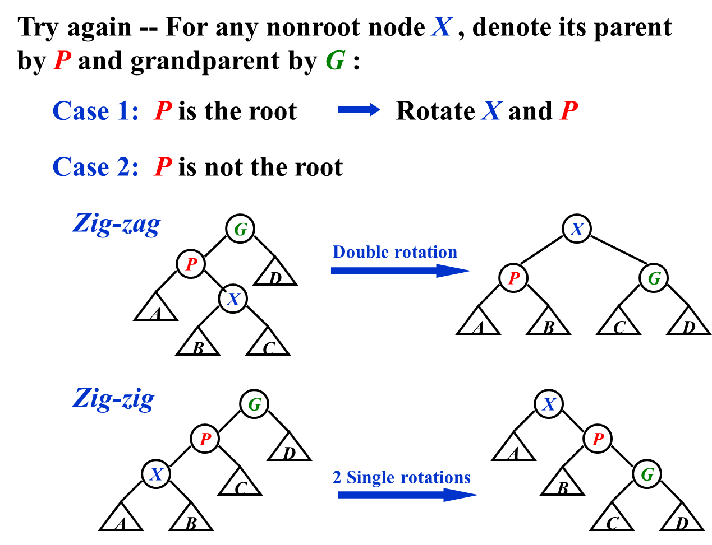
Deletion
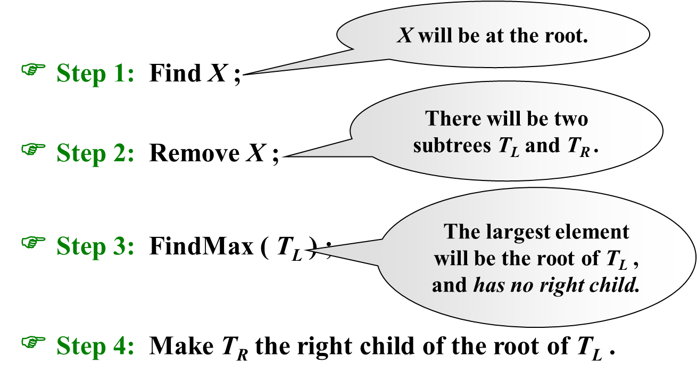
Amortized Analysis | 摊还分析
求数据结构的一个操作序列中执行的所有操作的平均时间，来评价操作的代价。
Aggregate analysis | 聚合分析
证明对所有n个操作，一个包含n个操作的序列总共花费最坏情况时间\(T(n)\)。在最坏的情况下，每次操作的平均成本或平摊成本因此是\(\frac{T(n)}{n}\)。
Accounting method | 核算法
对于每一种操作，赋予一个摊还代价(amortized cost)。赋予某些操作的摊还代价可能多于或少于其实际代价。当一个操作的摊还代价超出其实际的代价的时候，我们将差额存入数据结构的特定对象中，存入的差额称为信用（Credit)。对于后续操作中小于其实际代价的时候，预存的信用可以用来支付差额。 $$ \begin{aligned} 如果&用c_{i}表示第i个操作的真实代价，用\hat{c_i}代表第i个操作的摊还代价，需满足：&&&&&&&&&&\ &\sum_{i=1}^n\hat{c_i}\geqslant\sum_{i=1}^nc_i\ &T_{amortized}=\frac{\sum_{i=1}^n\hat{c_i}}{n} =O(?)\ 那么&可知,摊还成本为O(?) \end{aligned} $$ 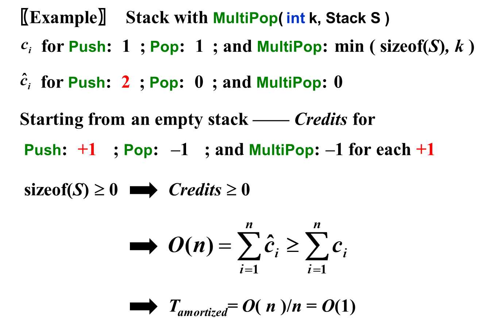
Potential method | 势能法
使用势函数\(\Phi\)来表示credit。 $$ \begin{aligned} \hat{c_i}-c_i&=Credit_i=\Phi(D_i)-\Phi(D_{i-1}) ~~\Leftarrow~~Potential~Funciton\ \sum_{i=1}^n\hat{c_i}&=\sum_{i=1}^n(c_i+\Phi(D_i)-\Phi(D_{i-1}))&&&&&&&&&&&&\ &=(\sum_{i=1}^nc_i)+\Phi(D_n)-\Phi(D_0)\ 为满足&Accounting~method的条件，只需满足\Phi(D_n)-\Phi(D_0)\geqslant0\ \end{aligned} $$
[!NOTE] $$ 假设需证明\sum_{i=1}^nc_i=O(n),~则当满足\Phi(D_n)-\Phi(D_0)=-n时也可也可满足，无须大于0\ $$
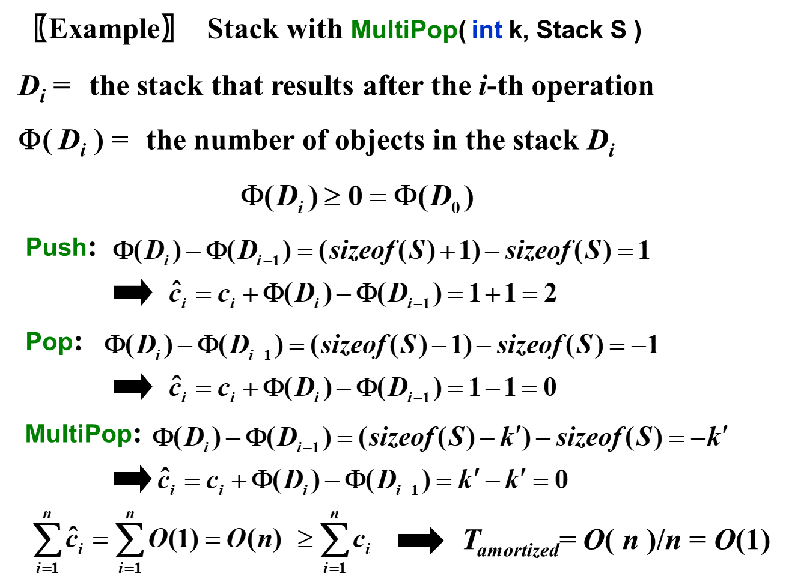
Chapter 2 ---Red-Black Trees and B+ Trees
Red-Black Trees
Definition
1.红黑树是一个二叉排序树
2.每个节点都是红色或者黑色
3.根节点为黑色
4.叶子节点（外部节点、NULL节点、失败的节点）都为黑色
5.红色节点的父节点和孩子节点都为黑色
6.对于每个节点，从该节点到任一叶子节点的路径上的黑色节点数量相同
Insert
每次插入都插入红色节点，对称同理
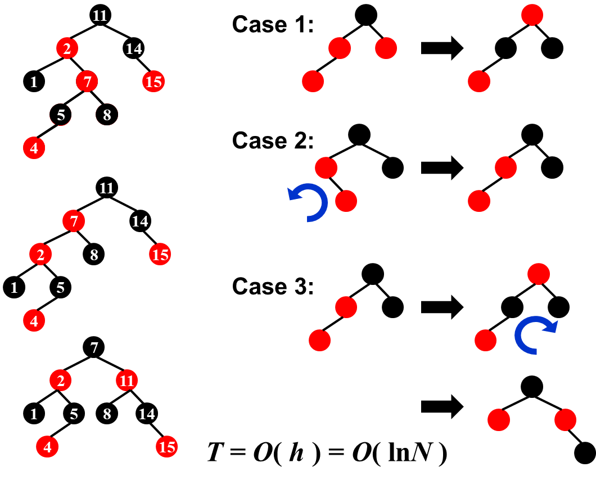
Delete
Case 1 ：\(x_0\)的兄弟节点\(w\)为红色。
• 交换父节点和兄弟节点的颜色。(\(w\)变为黑色)
• 对删除的节点的方向进行一次rotation。
• 前往Cases 2.1 / 3 / 4。
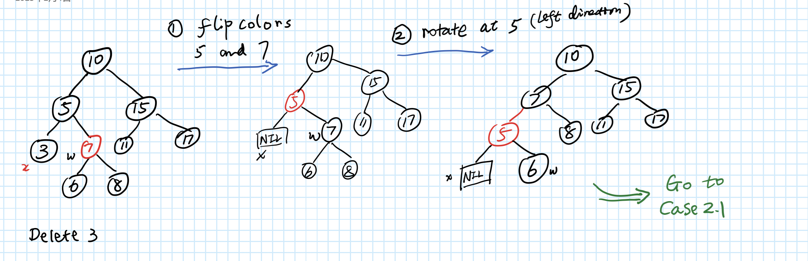
Case 2.1 \(x_0\)的兄弟节点\(w\)为黑色, 并且\(w\)的子节点为黑色。 同时, \(x\)的父节点为红色。
• 交换\(x_0\)父节点和兄弟节点的颜色，完成删除。

Case 2.2 \(x_0\)的兄弟节点\(w\)为黑色，并且\(w\)的子节点都为黑色。并且\(x_0\)的父节点为黑色。
• 把\(x_0\)的兄弟节点设为红色
• \(x_0\)的父节点变为新的删除节点\(z\)，递归至根节点。
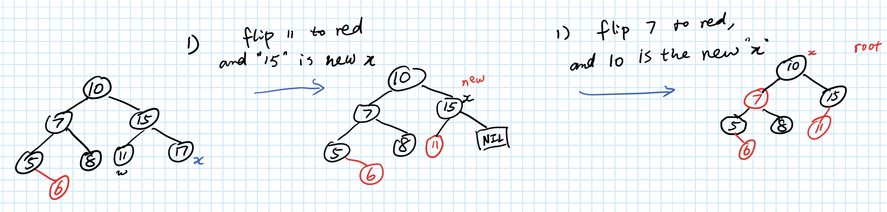
Case 3 \(x_0\)的兄弟节点\(w\)为黑色，\(w\)有一个红色的子节点，并且"outer nephew"为黑色。
• 交换\(w\)和"inner nephew"的颜色。
• 对\(x_0\)的兄弟节点\(w\)向"outer nephew"的方向进行一次rotation。
• 前往case 4。
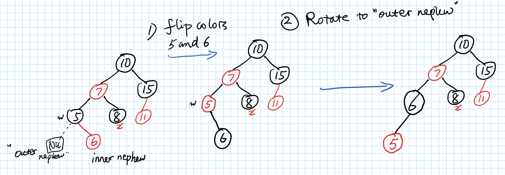
Case 4 \(x_0\)的兄弟节点\(w\)为黑色，\(w\)至少有一个红色的子节点，并且 "outer nephew"为红色。
• 将兄弟节点\(w\)设为父节点的颜色；将父节点和"outer nephew"的颜色设为黑色.
• 将父节点向被删除节点的方向进行一次rotation。
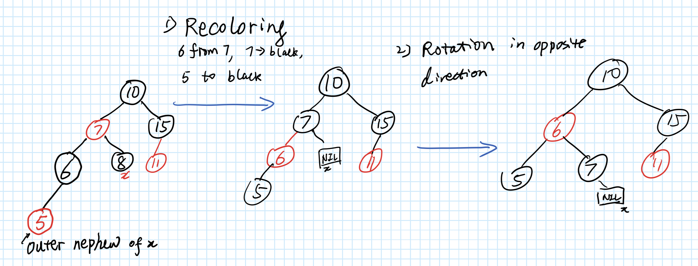
[!NOTE]
最多的rotation次数：Case 1 \(\rightarrow\) Case 3 \(\rightarrow\) Case 4 (3次)
Numbers of Rotations
B+ Trees
Definition
M阶B+树 (B+ Trees of order M) 具有以下性质：
1.根节点是一个叶节点或者有 \(2-M\) 个子节点。
2.所有非叶节点（除了根节点）都有 \(\lceil M/2\rceil-M\) 个子节点。
3.所有叶节点都在同一层，假设每个非根叶也有 \(\lceil M/2\rceil-M\)个键。
Chapter 3 ---Inverted File Index | 倒排文件索引
在建立索引时就确定字符串在哪里出现过。即在查找时用关键词为索引查找文档。
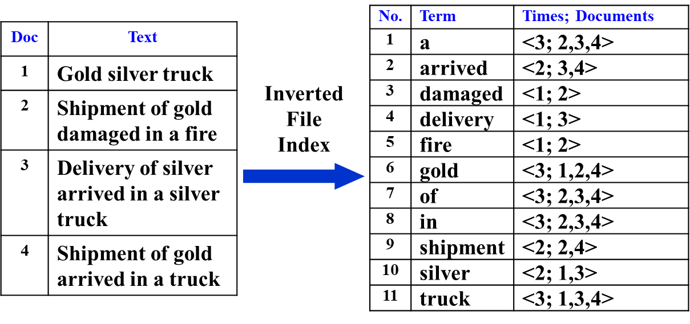
生成算法
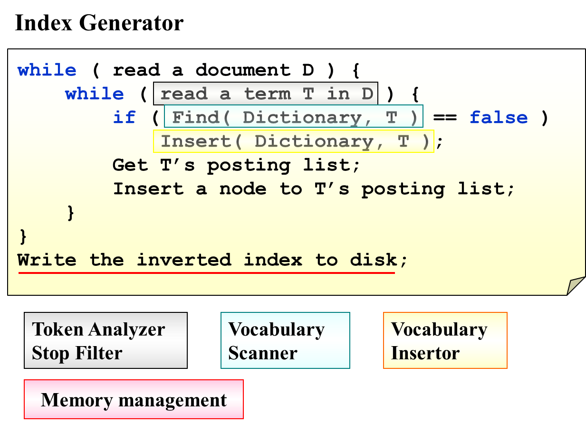
处理方法
Precision | Recall
Precison：查询到的文件中相关的比例
Recall：有关的文件中被查询到的比例
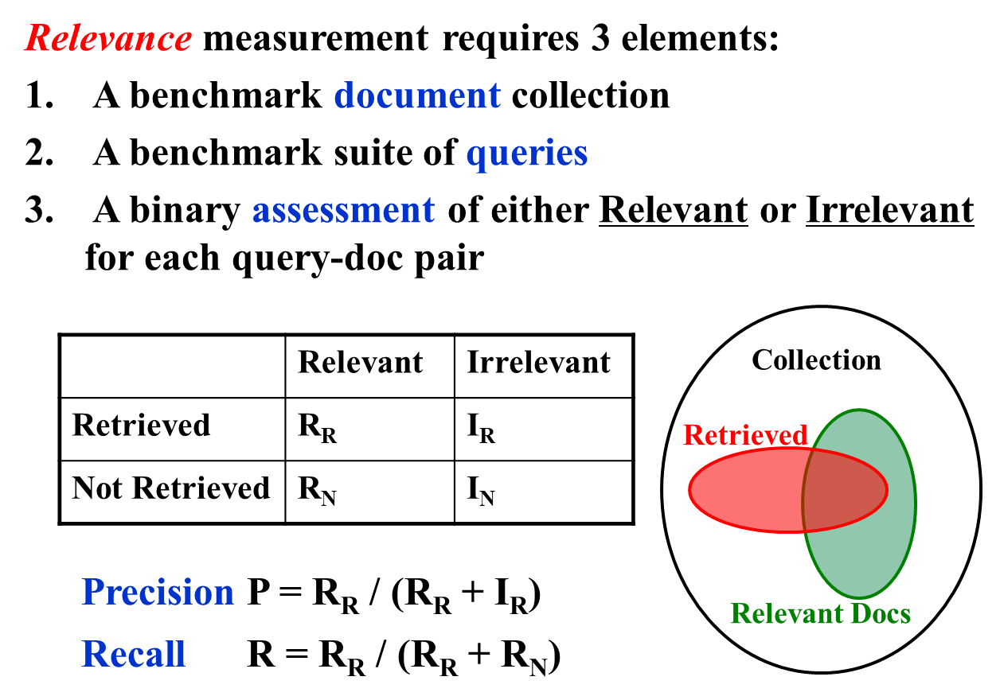
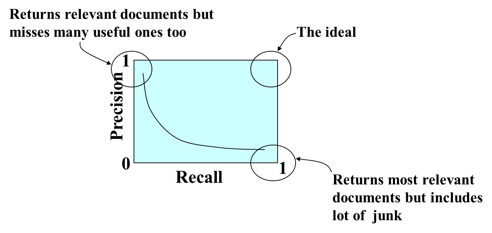
[!NOTE]
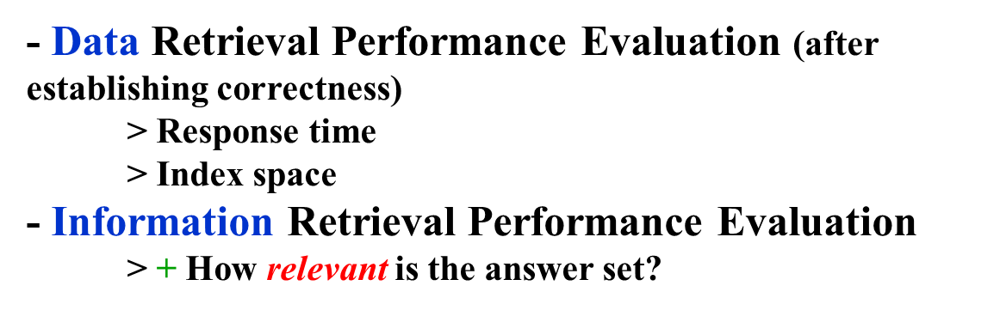
Chapter 4 ---Leftist Heaps and Skew Heaps
Leftist Heaps | 左式堆
Null path length | 零路径长
从X到一个不具有两个儿子的结点的最短路径的长。
定义 \(Npl(NULL) = -1\)。 $$ Npl(X) = min { Npl(C) + 1~for~all~C~as~children~of~ X }~~~~~~~~~~~~~~~~~~~~~~~~~~~~~~~~~~~~~~~~~~~~~~~~~~~~~~`~~~~~~~ $$
性质
堆中的任何节点，其左儿子的零路径长>=右儿子的零路径长。
定理
右路径上有 \(r\) 个节点的 leftist tree 至少有 \(2^r-1\) 个节点
Merge

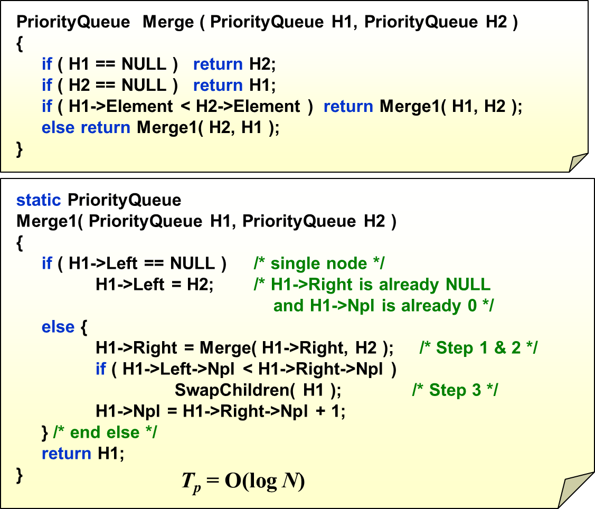
DeleteMin
1.删除根节点
2.Merge左右子树
Skew Heaps | 斜堆
目标
任何M次连续的操作的时间复杂度为O(MlogN)
Heavy node
右子树节点 > 左子树节点
否则为 light node
Merge
(case1) 如果一个空斜堆与一个非空斜堆合并，返回非空斜堆。
(case2) 如果两个斜堆都非空，那么比较两个根节点，取较小堆的根节点为新的根节点。将”较小堆的根节点的右孩子”和”较大堆”进行合并。
(case3) 合并后，交换新堆根节点的左孩子和右孩子。
Amortized Analysis for Skew Heaps
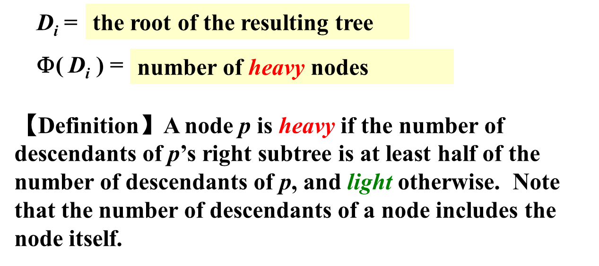
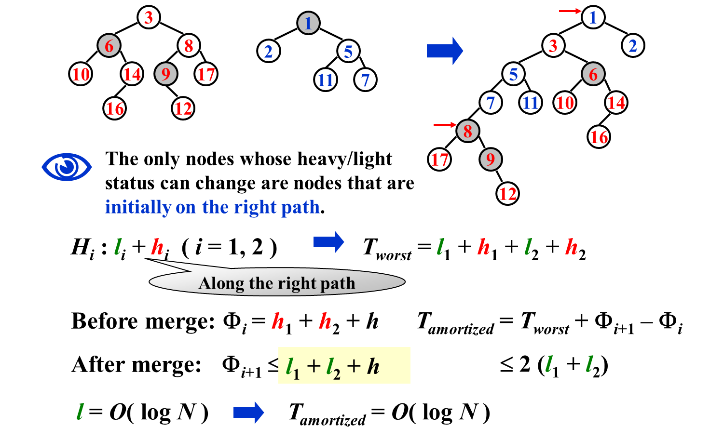
习题
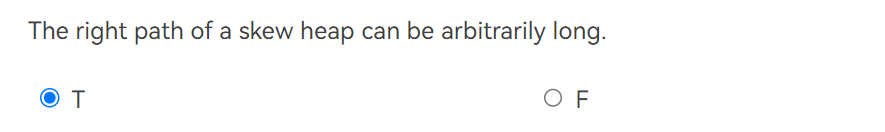
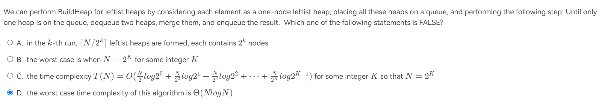